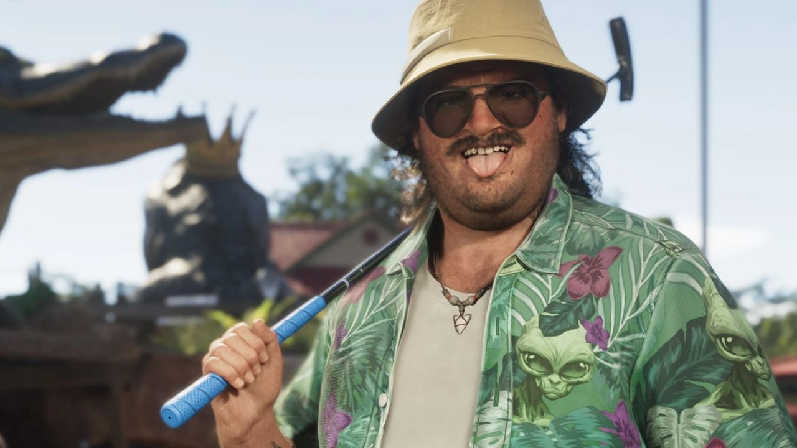

© Rockstar Games / Take-Two Interactive — image officielle de GTA VI (capture officielle), via GTA Wiki.
Club de minigolf
STATISTIQUES
Aucune donnée officielle disponible : cette arme n'a pas d'équivalent direct dans GTA V, ou Rockstar n'en a pas publié les statistiques. Les jauges seront ajoutées dès que des valeurs fiables existeront. La mobilité est une estimation de Vice City News selon le type d'arme.
Un club de minigolf est visible dans une capture officielle avec Cal Hampton, au milieu d'un parcours décoré d'alligators (voir le minigolf à thème alligators).
Visuel : une capture officielle de GTA VI (Cal Hampton 01).
Conseils d'utilisation
- Silencieuse : n'attire pas l'attention comme une arme à feu.
- Le corps-à-corps de GTA 6 intègre esquives et actions contextuelles (vu dans l'Extended Look).
- Inutile face à des ennemis armés à distance : à réserver aux situations rapprochées.
Conseils fondés sur le comportement de ce type d'arme dans les précédents GTA et sur ce que montre l'Extended Look ; ils seront mis à jour à la sortie du jeu.
Ce qu'on sait pour GTA 6
L'Extended Look du 27 août 2026 a montré un corps-à-corps retravaillé, avec esquives et actions contextuelles (Lucia y frappe un agresseur avec son talon aiguille). Les armes de mêlée restent le moyen le plus discret de régler un conflit.